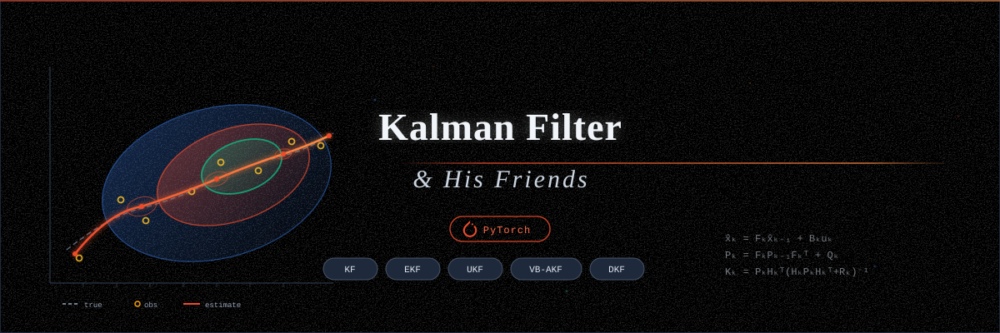

{kind=link}

Kalman Filter and Extensions
Authors: Matvei Kreinin, Maria Nikitina, Petr Babkin, Anastasia Voznyuk
Consultant: Oleg Bakhteev, PhD
Description
A PyTorch library of Kalman filters and extensions with full autograd support.
All filter parameters are registered as nn.Parameter and can be trained
via standard PyTorch optimizers. Covariance matrices are parameterized via
Cholesky decomposition to guarantee positive-definiteness during optimization.
Algorithms
Kalman Filter – linear state estimation
Extended Kalman Filter (EKF) – first-order Taylor linearization
Unscented Kalman Filter (UKF) – sigma-point sampling
Variational Bayesian Kalman Filter (VB-AKF) – adaptive measurement noise estimation
Deep Kalman Filter (DKF) – sequential VAE with neural transition and emission models
Quick Start
import torch
from kalman.filters import KalmanFilter
from kalman.gaussian import GaussianState
F = torch.eye(4) # transition matrix
H = torch.eye(2, 4) # measurement matrix
Q = 0.01 * torch.eye(4) # process noise
R = 0.1 * torch.eye(2) # measurement noise
kf = KalmanFilter(F, H, Q, R)
state = GaussianState(
mean=torch.zeros(4),
covariance=torch.eye(4),
)
for z in torch.randn(20, 2):
state = kf.predict(state)
state = kf.update(state, z)
print(state.mean)
More examples are available in the notebooks folder.